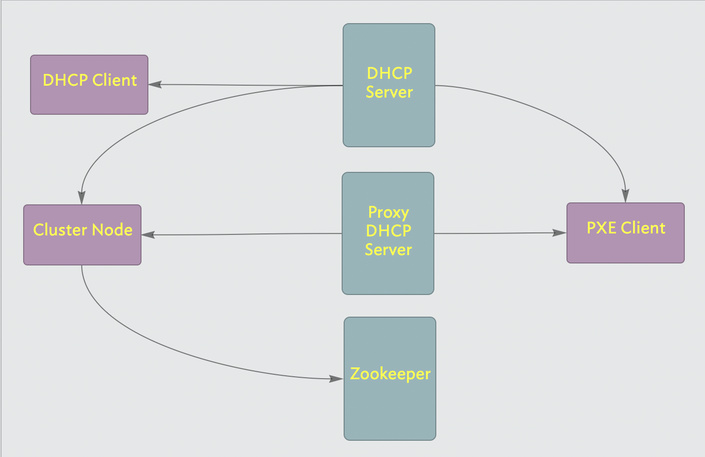

| Dates: | Dec 2009 - Oct 2010 |
| Role: | Senior Technical Yahoo! |
| Technologies: | zookeeper |
| Programming Languages: | java, perl, tla+ |
Support auto configuration and provisioning of cluster hosts using a distributed agent architecture. Auto configure new machines via PXE boot. Self register to a zookeeper cluster in order to publish status and to receive provisioning and management operations.
I was responsible for writing the endpoint agent which received and implemented the command sets to manage traffic, image deployment, application control and diagnostics.
The system was designed to support several deployment scenarios:
⁃ Deploy a new tier with the desired capacity and configurations
⁃ Cut-over to the new tier and release resources on the deprecated tier
⁃ Return deprecated hardware to the machine pool
⁃ Remove a subset of machines from active serving in the tier and upgrade
⁃ Enable newly provisioned machines and repeat sequence until all machines are upgraded
⁃ In some cases the architecture will change and the upgrade is more accurately described as shifting traffic to a new service. This can be viewed as an extreme case of the Replacement case, in that Replacement is really a per Tier concept, whereas this upgrade is on a Service as a whole.
⁃ Automated provisioning of hardware to replace broken hardware, subject to security and rate-limiting.
⁃ In the case where some error occurs during or after the upgrade, the SE determines:
1) Whether the error is systemic across the tier(s). If it is, the whole deployment is rolled back.
2) Whether the error affects isolated hosts. If so the SE determines whether to take the hosts out of rotation, which would occur if the number affected is small, or roll back if the number affected is large. (Except in the case of hardware failure, such failures indicate a failure on the part of the CSI to uniformly deploy. Nonetheless, we should provide a means of dealing with the case.)
Machines booted via PXE and installed a remote agent. This agent would manage multiple virtual environments configured as chroot jails. Additional Yahoo proprietary virtualization and package managers were incorporated into the base-builds.
Zookeeper was used as the controller. The implementation needed to support the following scenarios
1) provide a persistent store of configuration information
2) provide a reliable means of signaling state change information to trigger deployments
3) provide a reliable means of signalaing success or failure of a requested operation
4) provide a means to indicate the completion of a set of work
5) handle cases of incremental node addition
6) prove that the routine always ends up in a completed state [ i.e. no more work in progress ]
7) provide an audit trail for a given node configuration - i.e. log the set of ip addresses for auditing purposes.
A working implementation of the endpoint agent was delivered.
The PXE Client/Server environment was designed so it can be seamlessly integrated with an already in place DHCP and TFTP server infrastructure. This design goal presented a challenge when dealing with the classic DHCP protocol. Corporate DHCP servers are usually subject to strict policies that are designed to prevent easily adding the additional parameters and rules required to support a PXE environment. For this reason the PXE standard developed the concept of DHCP redirection or "proxyDHCP". The idea behind a proxyDHCP is to split the PXE DHCP requirements in two independently run and administered server units:
The classic DHCP server providing IP address, IP mask, etc. to all booting DHCP clients.
The proxyDHCP server providing TFTP server IP address and name of the NBP only to PXE identified booting clients.

In a DHCP plus proxyDHCP server environment[3]: 18 the PXE client initially broadcasts a single PXE DHCPDISCOVER packet and receives two complementary DHCPOFFERs; one from the regular non PXE enabled DHCP server and a second one from the proxyDHCP server. Both answers together provide the required information to allow the PXE client to continue with its booting process. This non-intrusive approach allows setting a PXE environment without touching the configuration of an already working DHCP server. The proxyDHCP service may also run on the same host as the standard DHCP service but even in this case they are both two independently run and administered applications. Since two services cannot use the same port 67/UDP on the same host, the proxyDHCP runs on port 4011/UDP. The proxyDHCP approach has proved to be extremely useful in a wide range of PXE scenarios going from corporate to home environments.
The service was never deployed and the project was shutdown.
| Luis Alvez: | https://www.linkedin.com/in/lafaspot/ |
| Brian Harrington: | https://www.linkedin.com/in/brharrington/ |